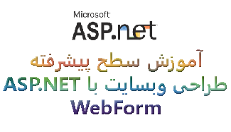

دوره ی ASP.NET Web Forms پیشرفته

در ادامه آموزش ای اس پی دات نت سطوح مقدماتی و متوسط و استقبال کاربران محترم سایت و بنا به درخواست شما عزیزان سطح پیشرفته این آموزش ایجاد و در وبسایت قرار گرفت.
در صورت هرگونه تغییری در خصوص بروزرسانی این پروژه فایل های آپدیت شده به صورت رایگان برای اعضا ویژه در صفحه مربوط به داکیومنت این پروژه قرار خواهند گرفت.
جهت اطلاع (مهم) : بمنظور تقویت و آشنائی با ASP.NET و نیز آشنائی بیشتر با زبان برنامه نویسی سی شارپ میتوانید از این آموزش استفاده نمائید ولی با توجه به ارتقا و بهبود تکنولوژی ASP.NET و ظهور نگارش های دیگر همچون MVC و CORE بصورت موکد پیشنهاد میگردد که با یکی از این دو تکنولوژی اقدام به پیاده سازی برنامه خود نمائید.(آموزش های این تکنولوژی ها نیز در سایت موجود میباشد) با آرزوی موفقیت برای تمامی دانشجویان عزیز.
سرفصل های آموزشی و آنچه در این مجموعه خواهید آموخت عبارتند از :
- آشنایی با اچ تی ام ال 5 و سی اس اس 3
- نصب بوت استراپ و جی کواری
- آشنایی با بوت استراپ
- آشنایی با ریسپانسیو بودن سایت
- آشنایی با قالب سایت تک صفحه ایی
- آشنایی با تکنیک های مختلف در طراحی سایت
- معرفی پروژه و داکیومنت آموزشی
- ای دی او دات نت و برقراری ارتباط سایت با پایگاه داده
- آشنایی با ایجاد صفحات کاربر و ادمین با تکنولوژی بوت استراپ
- ایجاد و گسترش سیستم مدیریت محتوا (CMS)
- نحوه ایجاد و مدیریت رویداد از طریق CMS
- نحوه ایجاد و مدیریت خبرنامه از طریق CMS
- نحوه مدیریت کاربران از طریق CMS
- نحوه ایجاد و مدیریت صفحات از طریق CMS
- کنترل و مدیریت قسمتهای مختلف سایت از طریق CMS
- تائید هویت و مجوز های دسترسی بر اساس Role
- معرفی بیش از ده یوزر کنترل با طراحی بوت استراپ
- آشنایی با ایجاد قالب برای رایانامه و استفاده از آن در برنامه
- استفاده بهینه از مستر پیج
- آپلود فایل در وبسایت و دیتا بیس
- معرفی امکانات چند زبانگی (پروژه شما)
- معرفی ارسال ایمیل و راهکارهای موجود(پروژه شما)
- معرفی مدیریت خطا و راهکارهای موجود(پروژه شما)

فایل های پیوست
- Tolooco.ir_ASP.NET03_00_01.rar
- Tolooco.ir_ASP.NET03_00_02.rar
- Tolooco.ir_ASP.NET03_01_01.rar
- Tolooco.ir_ASP.NET03_02_01.rar
- Tolooco.ir_ASP.NET03_03_01.rar
- Tolooco.ir_ASP.NET03_04_01.rar
- Tolooco.ir_ASP.NET03_04_02.rar
- Tolooco.ir_ASP.NET03_04_03.rar
- Tolooco.ir_ASP.NET03_05_01.rar
- Tolooco.ir_ASP.NET03_06_01.rar
- Tolooco.ir_ASP.NET03_06_02.rar
- Tolooco.ir_ASP.NET03_06_03.rar
- Tolooco.ir_ASP.NET03_06_04.rar
- Tolooco.ir_ASP.NET03_06_05.rar
- Tolooco.ir_ASP.NET03_06_06.rar
- Update01.rar
- Tolooco.ir_ASP.NET03_06_07.rar
- Tolooco.ir_ASP.NET03_06_08.rar
- Tolooco.ir_ASP.NET03_06_09.rar
- Tolooco.ir_ASP.NET03_06_10.rar
- Tolooco.ir_ASP.NET03_06_11_1.rar
- Tolooco.ir_ASP.NET03_06_12_1.rar
- Tolooco.ir_ASP.NET03_06_13.rar
- Tolooco.ir_ASP.NET03_06_14.rar
- Tolooco.ir_ASP.NET03_07_00_2.rar
- Tolooco_Website03_Update_0.zip
نظرات شما
قسمت نظرات با استفاده از سرویس دیسکاس پیاده سازی شده است. متأسفانه این سرویس از داخل ایران قابل دسترس نیست. لطفا از آی پی خارجی استفاده کنید.